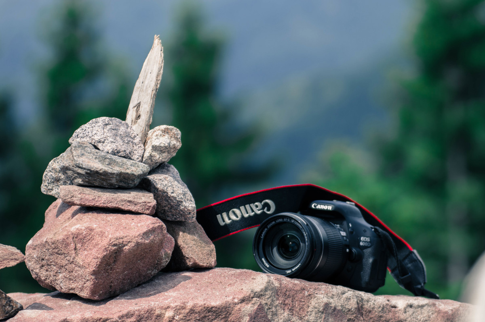

BACKSTORY
The digicam website is a website that explains information about all types of cameras. This website is useful for people who want to search about cameras and their various types
About Camera
Camera is a set of tools or equipment that functions to immortalize an object into an image (still or moving) which is the result of projection on a lens system.